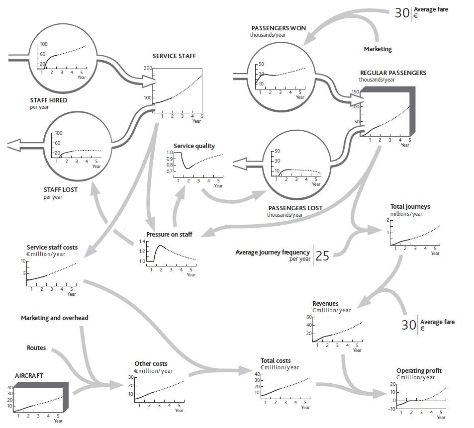

A strategic architectureA tool used to resolve specific issues and guide the performance of an entire strategy. The strategic architecture should be focused on flow rates. provides a living reference for a firm’s structure and behavior. A critical part of top management’s job is to understand that structure, ensure that it is well designed, and steer its performance (Keough & Doman, 1992). Diagrams such as Figure 5.1 "The Strategic Architecture of Your Restaurant, With Data Explaining Recent Performance" are a common way of understanding and controlling complex systems. Even if you have never visited a chemicals plant or power station, flown an aircraft, or managed a rail network, you will have seen pictures of “control panels” that give management continuous information on the states of key variables. Their control panels look like the system they are managing.
We are trying to achieve the same analog-style diagram for your organization. To make best use of such a picture, you need to have it available and accessible to your whole team, perhaps on a large wallboard in the main meeting room. It may be helpful to have other diagrams in other meeting rooms to show more detail about the architecture of key parts of the system: a diagram of customer segment details in the marketing area, a diagram of people flows in the human resource (HR) department, and so on.
You may not get it right the first time. However, any inaccuracies will become apparent as you learn whether the relationships you have sketched between the connected data provide a good explanation of what is happening. If not, you can readily identify what may be missing or inaccurate and revise the architecture diagram accordingly.
A well-developed strategic architecture is a powerful tool, both to resolve specific issues and to guide the performance of the entire enterprise strategy. To understand this, consider a rather more extensive example than your restaurant: the architecture of a low-fare airline (similar to Ryanair, which is featured in Chapter 2 "Resources: Vital Drivers of Performance"). Figure 5.2 "Growth Slowdown for a Low-Fare Airline" shows the first 2 years of operation, followed by a possible 3-year future, denoted by the dotted portion of the lines.
Figure 5.2 Growth Slowdown for a Low-Fare Airline
The chart for aircraft in this example shows a smooth line, even though this resource comes in batches; operating 7.5 planes, as it seems you did at one point in year 2, does not make sense. Strictly, we should have a stepped chart over time for aircraft, with a jump to a new number each time a batch of ordered aircraft is received. But for a strategic view of what is happening you do not need to worry about this picky detail.
It looks complicated, but if you take it in sections, you can see how the stages come together:
Valuable insights can arise simply from the team activity involved in developing this picture, as it will typically prompt substantial debate and analysis. Two elements will ensure that insights are accurate and address the correct issues:
Figure 5.2 "Growth Slowdown for a Low-Fare Airline" goes further than explaining recent history. It sketches out the team’s best estimate of where performance is heading into the future. The dashed lines show the estimate that you and your team came up with about the way things are likely to develop if you continue with present policies.
You will continue running a tight operation. This means continuing to hire staff at a steady rate. They may be under pressure, and service quality may not be great, but the business is satisfactory, passengers and journeys are growing, and your company is profitable. You expect that by increasing staff numbers ahead of growth in passengers and journeys, you will gradually bring down the pressure on your staff. In time, service quality will recover enough to slow the loss of passengers and overall growth will pick up.
The strategic architecture you develop will enable your team to evaluate a range of possible future strategies—the final stage of the process. You again need an organized approach:
Let us work through an example. One of your colleagues believes that poor service quality is unacceptable: It risks building up a poor reputation among potential passengers, which could hurt future growth. This colleague feels you should immediately hire enough staff to remove the overload.
Together, your team works through what might happen (Figure 5.3 "Relieving Staff Pressure to Improve Service", heavy dotted lines). One risk in the proposed solution is that these newcomers will not know what they are doing at first, so they will be deployed on simple tasks, and hiring rates can be reduced for a while so they can acquire more skill. Your colleague feels that this simple step will immediately relieve some of the pressure and give your people the ability to improve service quality quickly—especially if you tell them that this is your plan!
Figure 5.3 Relieving Staff Pressure to Improve Service

You are reasonably confident that the improvements to workload and quality will materialize, so you estimate that passenger growth will accelerate once more, provided you continue adding routes and aircraft. You feel there is a small risk that this will again put staff under pressure some time during year 3. You resolve to keep track of this issue and revisit the hiring policy if it looks as though the problem is recurring.